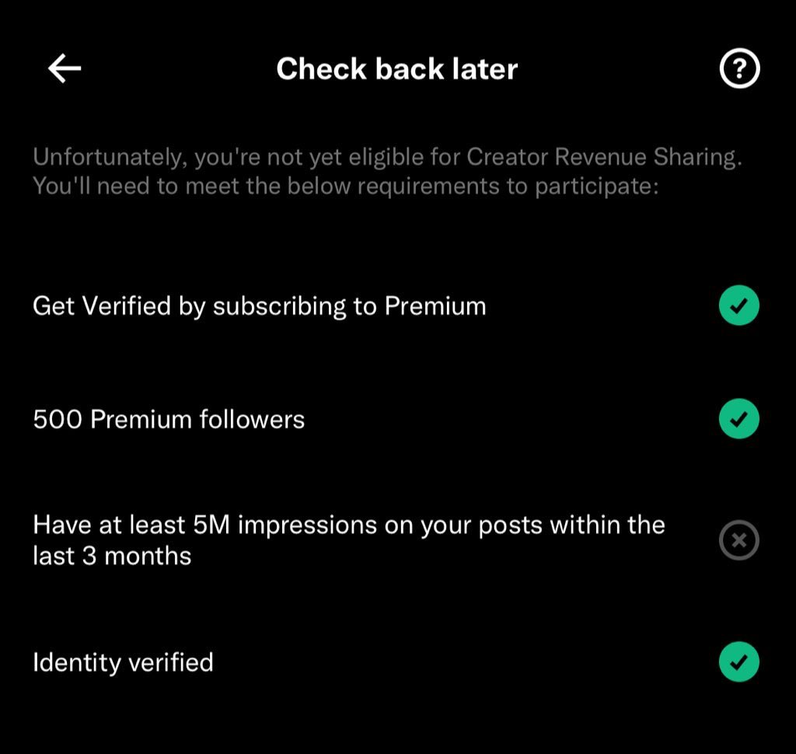

洛书瑶
@luoshuyao
要做到其实真的挺简单的，但是可能是你不想要的内容。最简单的就是从墙内搬运各种梗图和语录之类的，完全不用一点脑子复制粘贴就行。我屏蔽了好几个这种账号因为发的都是我看过无数次的东西，看烦了。
或者玩抽象，发各种逆天发言，这种要看天赋，一般也很火，很容易被转推，但是可能会被一些不明生物攻击。
再或者发一些容易煽动情绪的发言，各种类型的都有，感觉涉政的最容易火，但是很危险，因为你100%会被不明生物攻击

ユキ🎀
@YukinonCC
@luoshuyao 我除了5m曝光其他都有了 https://t.co/QDYiCpZ0M6